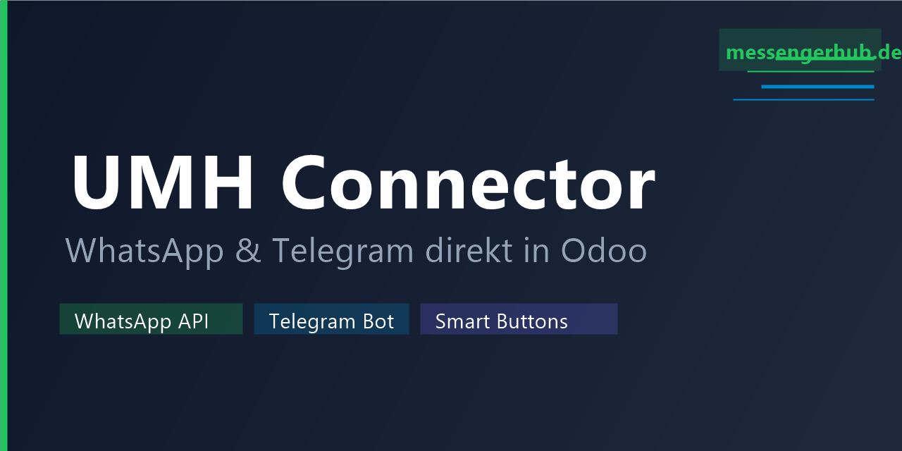

Der UMH Connector verbindet Odoo mit dem Unified Messenger Hub — Ihrer zentralen Plattform für WhatsApp-Business-API und Telegram. Aus jedem Kundenkontakt heraus können Sie in einem Klick den passenden Chat öffnen.
Ein Klick auf den WhatsApp-Button öffnet direkt den Chat mit diesem Kunden im Unified Messenger Hub. Funktioniert nur mit einer dedizierten WhatsApp-Nummer im Kundenstamm — kein gefährlicher Fallback auf Festnetznummern.
Für Kunden mit Telegram-Anbindung öffnet der Telegram-Button den Chat anhand der hinterlegten Chat-ID — direkt aus dem Kontaktformular heraus.
Die UMH-Instanz-URL wird einmalig unter Einstellungen → UMH Connector hinterlegt und gilt für alle Benutzer des Systems.
Durch das dedizierte WhatsApp-Feld wird zuverlässig verhindert, dass kostenpflichtige Meta-Templates an Festnetznummern ohne WhatsApp gesendet werden.
Unified Messenger Hub · messengerhub.de · Open Source (GPL-3) · GitHub